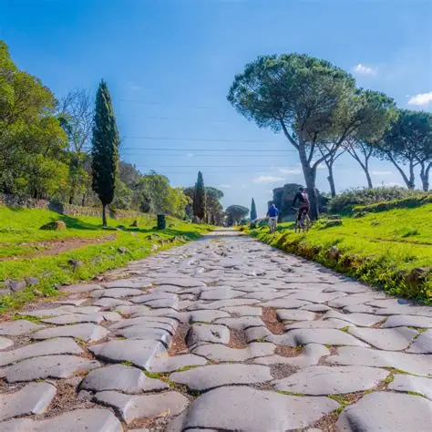
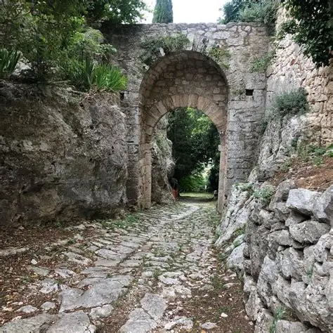
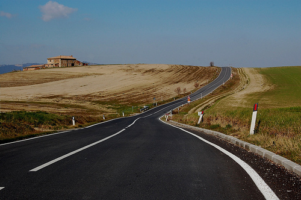
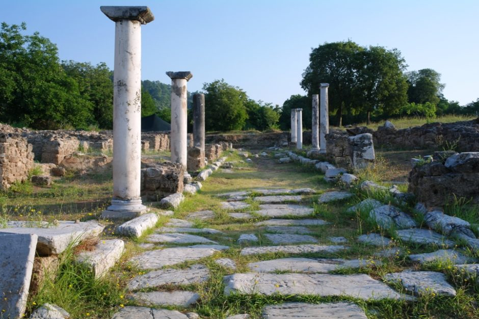

A REDE ROMANA
TODOS OS CAMINHOS LEVAM A ROMA
Roma construiu uma extensa rede de estradas que ligava cidades, regiões e províncias. Essas vias facilitavam o deslocamento de soldados, comerciantes e viajantes.
As estradas também eram fundamentais para o comércio. Por elas, diferentes mercadorias podiam chegar aos grandes centros urbanos do Império.
Além das estradas, as rotas marítimas conectavam portos do Mediterrâneo, permitindo que produtos circulassem por distâncias ainda maiores.
PRINCIPAIS VIAS
ROTAS QUE MARCARAM ROMA

Via Ápia
Uma das estradas mais importantes de Roma, conectando a cidade de Roma ao sul da Península Itálica.
SAIBA MAIS
Construída a partir de 312 a.C., a Via Ápia foi utilizada para circulação militar, transporte de mercadorias e deslocamento de pessoas.

Via Flamínia
Ligava Roma às regiões do centro e do norte da Península Itálica.
SAIBA MAIS
A estrada foi construída para facilitar a comunicação entre Roma e outras regiões importantes da Itália.

Via Aurélia
Percorria a costa ocidental da Itália e conectava Roma a importantes áreas costeiras.
SAIBA MAIS
Sua localização favorecia a circulação de pessoas e mercadorias entre Roma e as regiões costeiras.

Via Cássia
Estrada que ligava Roma a regiões da Etrúria e posteriormente alcançava áreas mais ao norte.
SAIBA MAIS
A Via Cássia fazia parte da rede de circulação terrestre que conectava Roma a outras regiões da Península Itálica.

Via Egnácia
Importante rota que atravessava os Bálcãs e conectava o território romano às regiões orientais.
SAIBA MAIS
A Via Egnácia era importante para a circulação entre o Adriático, a Grécia e outras regiões orientais do mundo romano.
UMA REDE DE CIRCULAÇÃO
MAIS DO QUE ESTRADAS
As rotas romanas formavam uma grande rede de circulação. Elas ajudavam a conectar diferentes regiões e contribuíam para o funcionamento econômico, militar e administrativo do Império Romano.